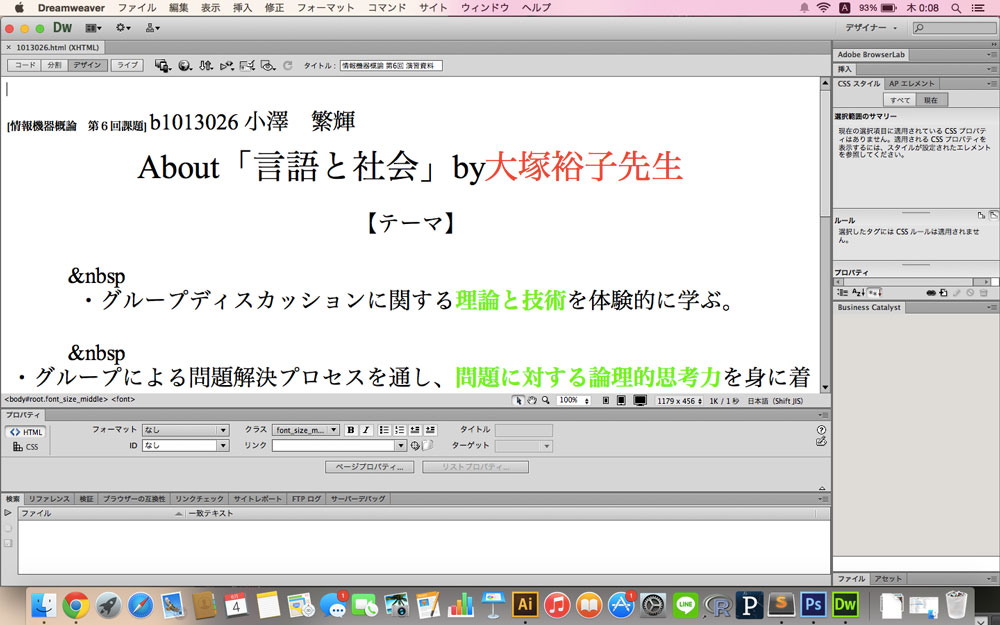
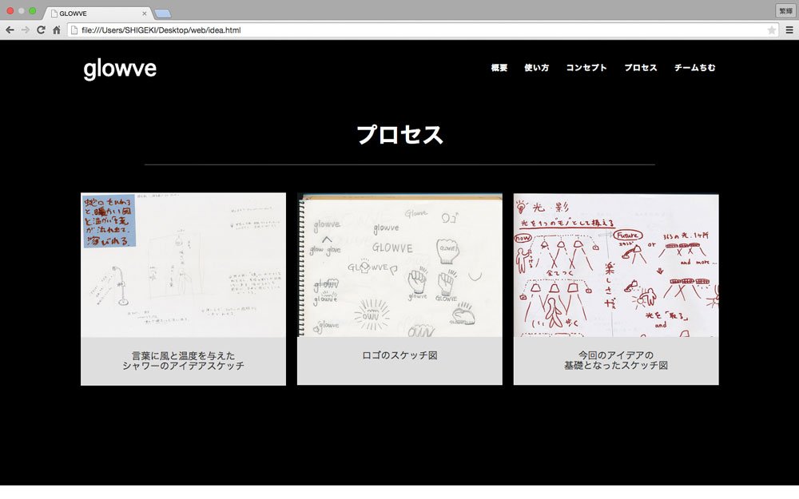

- 
- 
First web making
Web
1年前期の『言語と社会』という授業の課題で初めて作成したWebページです。このサイトを作った時に初めてプログラミング言語の楽しさを知ってワクワクしながら作成したのを今でも覚えています。プログラミング言語といっても、オブジェクト指向だったりウェブページを構築するために用いられたりと様々ですが、今ではweb構築言語(javascript,php)などに興味を持ち勉強するようになりました。このウェブページを作成してから、プロジェクトでもウェブサイトを作るようになり、実際の仕事場でも活かせたらいいと思っています。
| 期間 | 2013.4 - 2013.8 |
|---|---|
| ソフト | HTML |
もしよろしければ、見てください『言語と社会』by大塚裕子先生